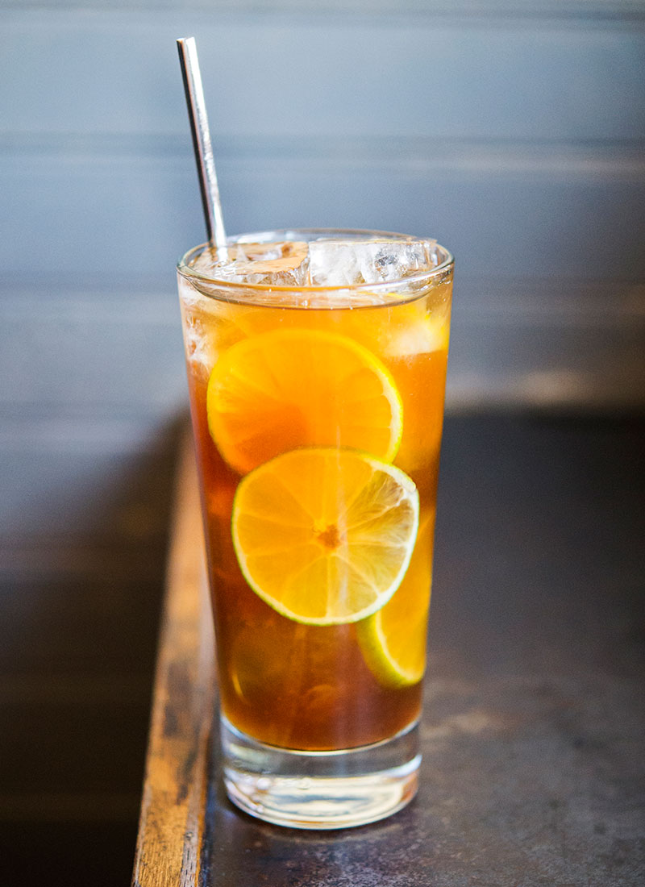

Dark & Stormy

Description
This is a classic rum drink that is very popular in the Caribbean islands.
It is a simple recipe of only four ingredients and usually enjoyed
on days as a refreshing sipper.
Ingredients
- 50ml Dark Rum
- 15ml Fresh Lime Juice
- 100ml Ginger Beer
- 3 Dashes Angostura Bitters
Steps
- Pour Rum & Lime into a tall glass
- Fill glass with ice
- Add Ginger Beer
- Stir until properly mixed
- Add Bitters to the top of the drink
- Garnish drink with Lime wheels